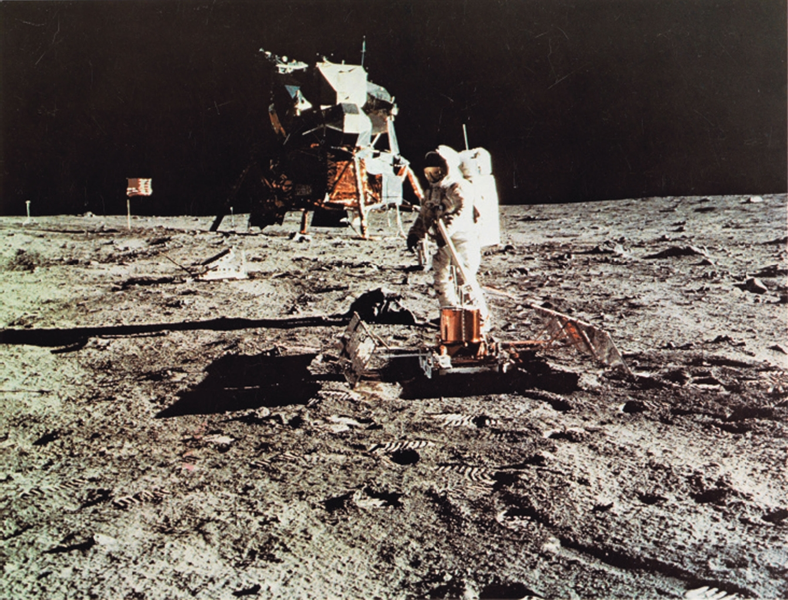

Exploração Espacial
Início
História
Missões
Impacto Socioeconômico
Formulário
Marcos Históricos da Corrida Espacial
1957: Lançamento do Sputnik 1.
1961: Yuri Gagarin, primeiro humano no espaço.
1969: Chegada do homem à Lua com a Apollo 11.
Anos seguintes: Voyager, ISS e exploração de Marte.
